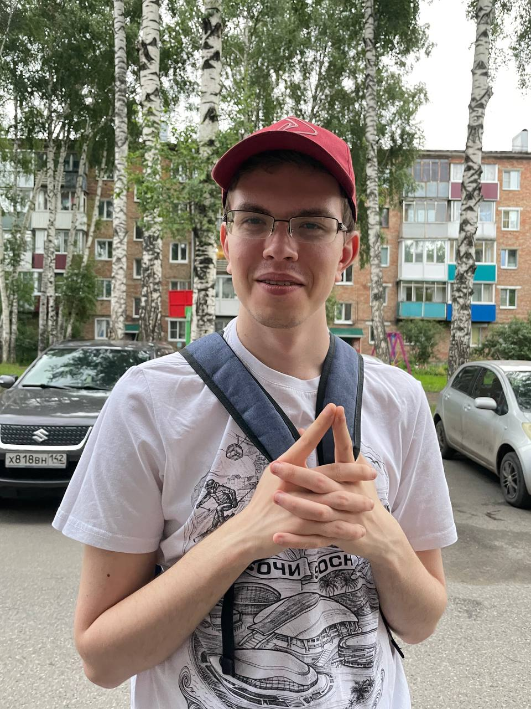

чемпион мира
финал карьеры танкиста
текущий рейтинг
Трёхкратный чемпион мира по «Миру танков» (2018, 2020, 2021) — абсолютный рекордсмен по победам в WGL. В 2022 году завершил профессиональную карьеру танкиста, оставив за собой статус легенды.
Сегодня — один из сильнейших игроков в Escape from Tarkov. Хладнокровие, выучка и тактическое чутьё позволяют ему доминировать в самых жёстких рейдах. Его опыт — символ перерождения чемпиона.